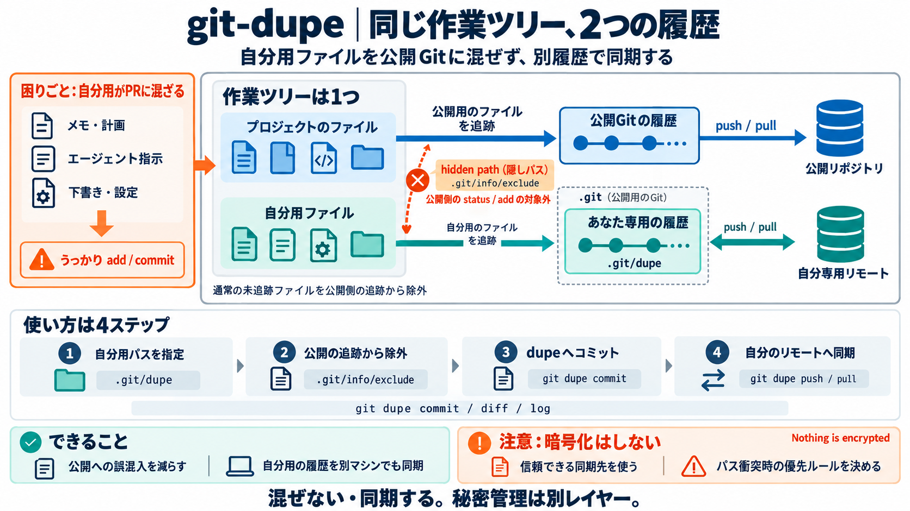

Is GitHub Secure? Private Repository Security 2026 | Guide
GitHub offers multiple security layers for private repositories that go far beyond simple access control: ### Encryptio…

重ねた2つ目のGit
プロジェクトの作業ツリーはそのまま使いつつ、
自分用ファイルだけを「公開Gitからは見えない別履歴」で同期します。
混入事故が起きる
メモ、計画、下書きスクリプト、エージェント指示、エディタ設定などは便利ですが、うっかりPRやcommitに混ざると困ります。
同じ部屋に2つの台帳
プロジェクトの“部屋”は共有しつつ、あなたの“台帳”は別に持つ。公開側には見えない形で、別履歴だけを進めます。
場所は.gitの中
git-dupeは、プロジェクト側の.gitディレクトリ内に自分用のGit（“デュープ”）を作り、そこにだけコミットします。
基本の流れ
やることは「作る→隠す→あなたのリモートへ同期」。プロジェクトには混ぜません。
なぜ status に出ない
git-dupeは、プロジェクト側の追跡対象からあなたの隠しパスを外します。結果として status / add / 公開commit に混ざりません。
通常Gitと対比
通常のGitは“同じ作業ツリー”に対して追跡と公開を行います。git-dupeは“公開追跡から外す場所”を前提に分離します。
dupeとリモート
あなたの履歴は“自分専用の空リポジトリ（リモート）”へ push/pull して同期します。公開リポジトリは指しません。
暗号化はしない
Nothing is encrypted。dupeでpushした内容は、通常のGitリモートにそのまま保存されます。
コマンド体裁は維持
commit / diff / log などは“普通のGitの延長”として扱えるように設計されています。
detachで戻す
git dupe detach はデュープを取り除きますが、「ディスク上のファイル自体が常に消える」タイプではありません。
チーム運用の注意
同じ隠しパスを別側で先に取り込むと、上書きが起こり得ます。意思決定が必要です。
導入の向き不向き
git-dupeは“セキュア保存”より“混ぜない・同期する”に最適化されています。機密性は運用や別暗号化で補います。
今日の要点
git-dupeは、プロジェクト側からは見えない隠しパス（hidden path）で公開混入を防ぎ、あなた専用のdupe履歴を同期します。
GitHub offers multiple security layers for private repositories that go far beyond simple access control: ### Encryptio…
### 1Password vs Bitwarden vs Built-In Vaults for Developer Secrets Compare ConfigSync's four secret providers and pick…
Git tracks source history well, but repository security sits around Git. Authentication, permissions, auditing, reposito…
Private Repositories – you should use a private repository for sensitive code. Everyone can see public repositories, and…
The designated `.github-private` repository can be internal or private. Visibility controls who can read or propose chan…